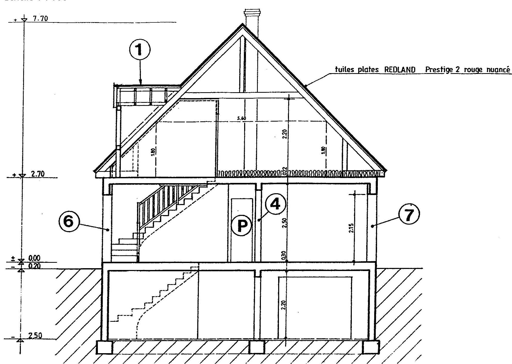
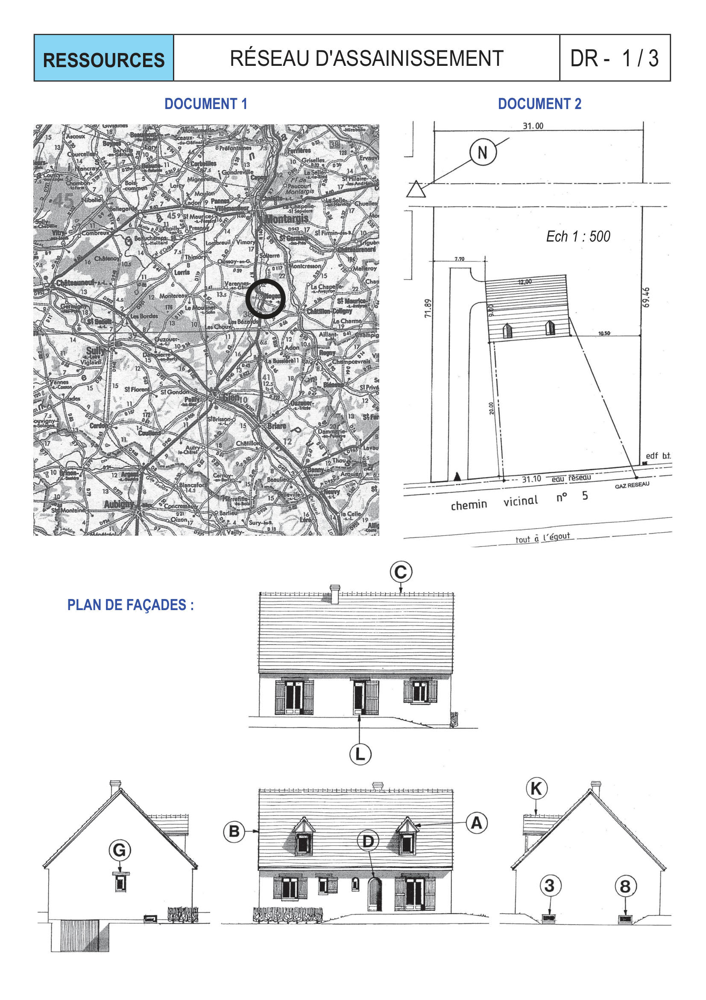
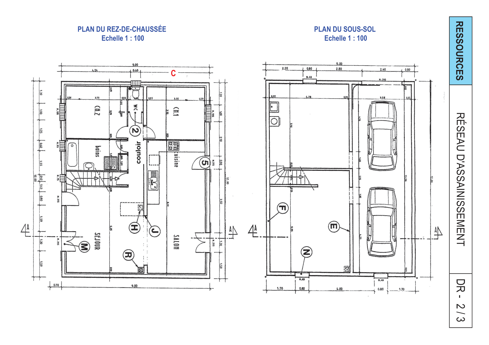
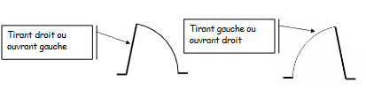
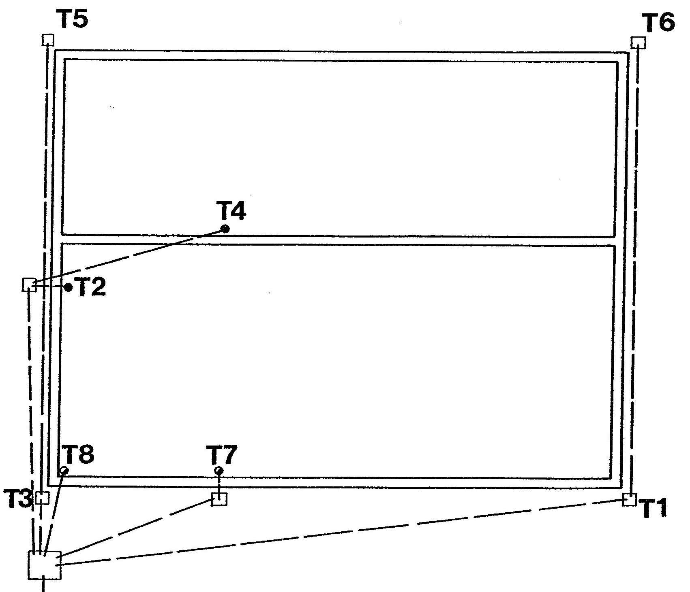

Visualiseur Haute Définition
Initialisation du flux sécurisé vers le serveur...
|
Lycée Professionnel Académie de Versailles Bac Pro MELEC |
TP 03 : RÉSEAU D'ASSAINISSEMENT & LECTURE DE PLANS Dossier d'activité d'apprentissage & d'évaluation — Bâtiment individuel | M. DIAKHO |
Décoder les plans du bâtiment, relever les cotes et identifier le réseau d'assainissement pour implanter les équipements électriques.

| Lycée Professionnel — Enseignement Technique Bac Pro MELEC | Page 1 / 8 — Page de Garde & Contrat |
|
Lycée Professionnel Académie de Versailles Bac Pro MELEC |
TP 03 : RÉSEAU D'ASSAINISSEMENT & LECTURE DE PLANS Contexte professionnel & Référentiel de compétences | M. DIAKHO |
| Lycée Professionnel — Enseignement Technique Bac Pro MELEC | Page 2 / 8 — Contexte & Référentiel |
|
Lycée Professionnel Académie de Versailles Bac Pro MELEC |
TP 03 : RÉSEAU D'ASSAINISSEMENT & LECTURE DE PLANS Bilan officiel par compétences & Validation de séance | M. DIAKHO |
| Réf | Intitulé de la compétence | Niveau d'acquisition | Statut |
|---|
Lorsque le questionnaire est complété, appelez l'enseignant pour contrôle et saisie du code secret de certification.
| Lycée Professionnel — Enseignement Technique Bac Pro MELEC | Page 3 / 8 — Bilan & Synthèse des Notes |
|
Lycée Professionnel Académie de Versailles Bac Pro MELEC |
TP 03 : RÉSEAU D'ASSAINISSEMENT 1ère Partie : Étude de la situation géographique du bâtiment | M. DIAKHO |
Consigne : À l'aide du document ressource DR 1/3 ci-dessous, identifiez les documents, déterminez l'orientation de la façade principale et explicitez l'échelle graphique.

| Lycée Professionnel — Enseignement Technique Bac Pro MELEC | Page 4 / 8 — Exercice 1 : Situation géographique & Orientation |
|
Lycée Professionnel Académie de Versailles Bac Pro MELEC |
TP 03 : RÉSEAU D'ASSAINISSEMENT 2ème Partie : Étude de la construction du bâtiment | M. DIAKHO |
Consigne : À l'aide du document ressource DR 2/3 (Plans du sous-sol et du rez-de-chaussée), répondez avec précision aux questions technologiques.

| Lycée Professionnel — Enseignement Technique Bac Pro MELEC | Page 5 / 8 — Exercice 2 : Construction & Niveaux du bâtiment |
|
Lycée Professionnel Académie de Versailles Bac Pro MELEC |
TP 03 : RÉSEAU D'ASSAINISSEMENT 3ème Partie : Étude de la cotation, surfaces & dimensions | M. DIAKHO |
Consigne : À l'aide de la coupe COUPE A-A (DR 3/3) et du PLAN DU RDC (DR 2/3), relevez et calculez les grandeurs demandées.
| Lycée Professionnel — Enseignement Technique Bac Pro MELEC | Page 6 / 8 — Exercice 3 : Cotation, Surfaces & Baies |
|
Lycée Professionnel Académie de Versailles Bac Pro MELEC |
TP 03 : RÉSEAU D'ASSAINISSEMENT 4ème Partie : Étude des escaliers & Sens d'ouverture | M. DIAKHO |
Consigne : Analysez la conception des escaliers balancés et déterminez le sens d'ouverture de la porte d'accès au sous-sol d'après le schéma ressource.

| Lycée Professionnel — Enseignement Technique Bac Pro MELEC | Page 7 / 8 — Exercice 4 : Escaliers & Ouvertures |
|
Lycée Professionnel Académie de Versailles Bac Pro MELEC |
TP 03 : RÉSEAU D'ASSAINISSEMENT 5ème Partie : Étude du réseau d'assainissement (EU, EV, EP) | M. DIAKHO |
Consigne : À partir du réseau d'assainissement en ressource DR 3/3, définissez la provenance de chaque effluent et qualifiez les tuyaux T1 à T8.

| Tuyau | T1 | T2 | T3 | T4 | T5 | T6 | T7 | T8 |
|---|---|---|---|---|---|---|---|---|
| Effluent |
| Lycée Professionnel — Enseignement Technique Bac Pro MELEC | Page 8 / 8 — Exercice 5 : Réseau d'assainissement & Canalisations |